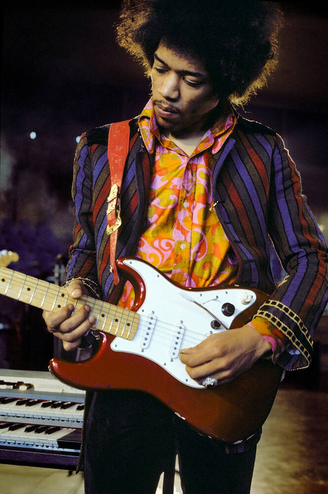
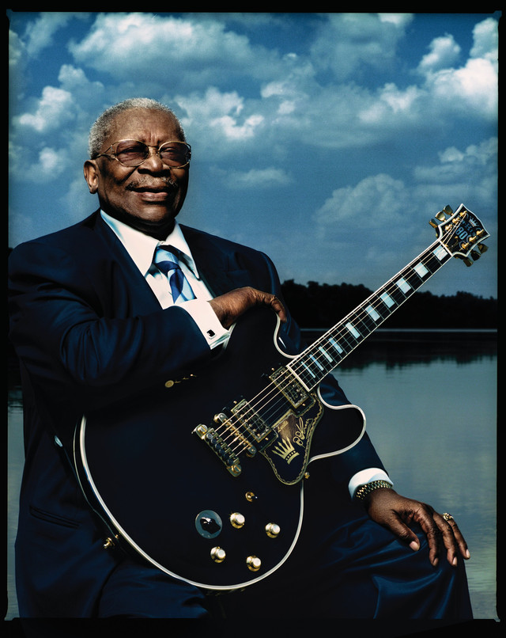
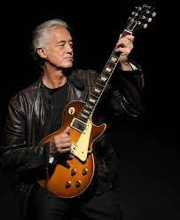
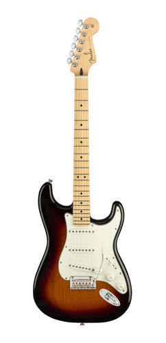
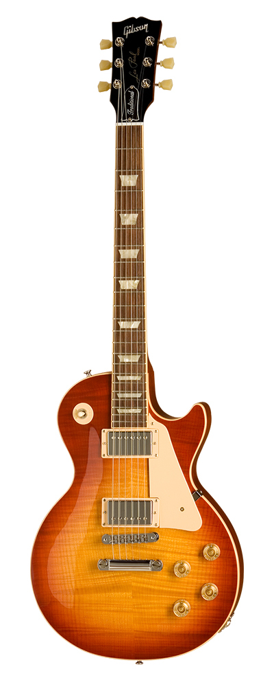
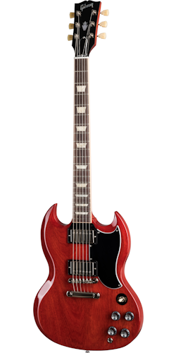
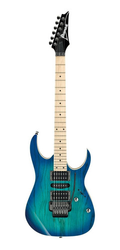
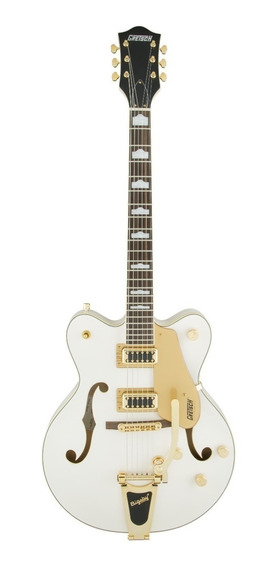

História das guitarras
- O que é uma guitarra?
- Guitarra refere-se a uma série de instrumentos de cordas dedilhadas, ou instrumentos cordofones que possuem braço e caixa de ressonância cujas cordas são beliscadas.
- Quem inventou a Guitarra moderna?
- O engenheiro Lloyd Loar
- Quando surgiu a Guitarra moderna?
- A primeira guitarra foi inventada em 1920, nos Estados Unidos, pelo engenheiro Lloyd Loar. Na época, ele trabalhava em uma grande empresa que fabricava instrumentos musicais. Adivinhe o nome dela? Gibson!
- Tipos de guitarra?
-
Acústica: possui caixa de ressonância
Elétrica: que podem ou não possuir caixa de ressonância (ver: guitarra semiacústica), mas utilizam captadores e amplificadores para aumentar a intensidade sonora do instrumento. - Quando surgiu a guitarra?
- Instrumentos similares aos que hoje chamamos de guitarras existem ao menos há 5 mil anos. A guitarra parece derivar de outros instrumentos existentes anteriormente na Ásia Central. Instrumentos muito similares à guitarra aparecem em antigos alto-relevos e estátuas descobertas em Susa, na Pérsia (atualmente no Irã). A guitarra, em forma muito próxima à guitarra acústica atual, foi introduzida na Espanha no Século IX, mas não se conhece com precisão toda a história deste instrumento. No entanto há duas hipóteses mais prováveis para a introdução da guitarra no ocidente. A primeira hipótese é que a guitarra seria derivada da chamada kithára grega, que com o domínio do Império Romano passou a se chamar cítara romana, e era também denominada de fidícula. Teria chegado à Península Ibérica por volta do século I com os romanos. Esse instrumento se assemelhava à lira e posteriormente foram acontecendo as seguintes transformações: os seus braços dispostos da forma da lira foram se unindo, formando uma caixa acústica, à qual foi acrescentado um braço de três cravelhas e três cordas, e a esse braço foram feitas divisões transversais (trastes). A segunda hipótese é de que este instrumento seria derivado do antigo alaúde árabe, nome originado da palavra al ud, (a madeira),[6] e que teria sido levado para a Península Ibérica através das invasões muçulmanas. O alaúde árabe que penetrou na Península nessa época foi um instrumento que se adaptou perfeitamente às atividades culturais e, em pouco tempo, fazia parte das atividades da corte. Outra hipótese é de que foram aplicadas as técnicas do alaúde (cordas beliscadas, número de cordas, afinação, etc.) a instrumentos de corda friccionada (nessa altura chamadas “violas”). Isso explicaria o fato de em espanhol ter havido a distinção entre vihuela de arco (viola tocada com um arco) e vihuela de mano (viola tocada com a mão).
Guitarristas
- 
- 
- 
-

-

Jimi Hendrix
Considerado por muitos o melhor guitarrista de todos os tempos, James Marshall Hendrix (Jimi hendrix) praticamente criou muitas das formas como vemos os guitarristas hoje. Sua habilidade, estilo e força com o instrumento fazem com que seja inspiração para praticamente qualquer guitarrista que se arrisque com solos
B.B King
Foi considerado o 6° melhor guitarrista de todos os tempos pela revista norte-americana, B.B King (Blues Boy King) é um dos mestres do Blues e inspiração para muitos guitarristas, como por exemplo Jimi Hendrix. Portador da guitarra Lucile(todas suas guitarras foram chamadas assim) e com uma voz incrível, King gravou seu nome na história da musica
Jimmy Page
James Patrick Page, musico, produtor e compositor, alcançou sucesso internacional como guitarrista da banda de rock Led Zeppelin. Amplamente considerado como um dos maiores e mais influentes guitarristas de todos os tempos, por muitos o segundo melhor da história com suas características guitarras Gibson
John Frusciante
John Anthony Frusciante é o guitarrista dos Red Hot Chili Peppers. John Frusciante também mantem uma carreira solo, tendo lançado quinze álbuns sob o seu próprio nome. Com um timbre incrível e uma criatividade monstro, John marcou seu nome na música para sempre!
Slash
Saul Hudson (slash),mundialmente famoso como integrante da formação clássica da banda Guns N' Roses, com quem alcançou sucesso mundial no final da década de 1980 e início dos anos 90. Tendo características fortes seu cabelo, a cartola e sua guitarra Les Paul, Slash também é um guitarrista incrível! Sendo uma inspiração para guitarristas de todo mundo. Com solos e riffs incríveis, Slash tem seu nome marcado na história da música!
Guitarras
- 
- 
- 
- 
- 
Stratocaster
Considerado por muitos o melhor guitarrista de todos os tempos, James Marshall Hendrix (Jimi hendrix) praticamente criou muitas das formas como vemos os guitarristas hoje. Sua habilidade, estilo e força com o instrumento fazem com que seja inspiração para praticamente qualquer guitarrista que se arrisque com solos
Les paul
Foi considerado o 6° melhor guitarrista de todos os tempos pela revista norte-americana, B.B King (Blues Boy King) é um dos mestres do Blues e inspiração para muitos guitarristas, como por exemplo Jimi Hendrix. Portador da guitarra Lucile(todas suas guitarras foram chamadas assim) e com uma voz incrível, King gravou seu nome na história da musica
Sg
James Patrick Page, musico, produtor e compositor, alcançou sucesso internacional como guitarrista da banda de rock Led Zeppelin. Amplamente considerado como um dos maiores e mais influentes guitarristas de todos os tempos, por muitos o segundo melhor da história com suas características guitarras Gibson
Ibanez
John Anthony Frusciante é o guitarrista dos Red Hot Chili Peppers. John Frusciante também mantem uma carreira solo, tendo lançado quinze álbuns sob o seu próprio nome. Com um timbre incrível e uma criatividade monstro, John marcou seu nome na música para sempre!
Gretsch
Saul Hudson (slash),mundialmente famoso como integrante da formação clássica da banda Guns N' Roses, com quem alcançou sucesso mundial no final da década de 1980 e início dos anos 90. Tendo características fortes seu cabelo, a cartola e sua guitarra Les Paul, Slash também é um guitarrista incrível! Sendo uma inspiração para guitarristas de todo mundo. Com solos e riffs incríveis, Slash tem seu nome marcado na história da música!